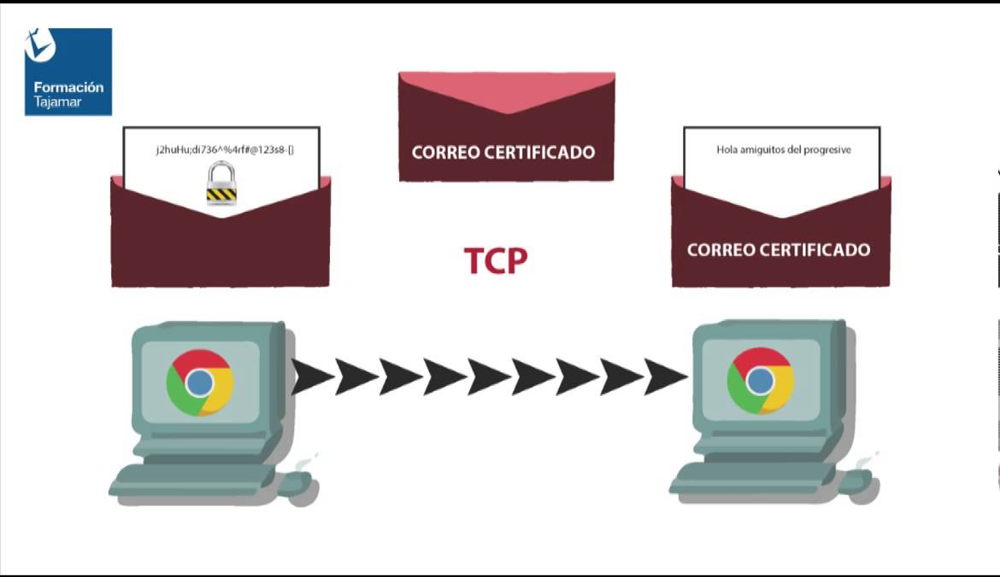

Aplicación |
Están contenidos los protocolos SMTP, para el correo electrónico; FTP, para las transferencia de archivos; TELNET, para la conexión remota, y HTTP, Hypertext Transfer Protocol. | |
Transporte |
Se comprende a los protocolos TCP y UDP, que se ocupan del manejo y el transporte de los datos. |  |
Internet |
Se ubica en el nivel de la red para enviar los paquetes de información. | |
Físico |
Es el análogo al nivel físico del OSI. | |
Red |
Es el correspondiente a la interfaz de la red. |
Diseñado por: Martínez Cruz Vanessa